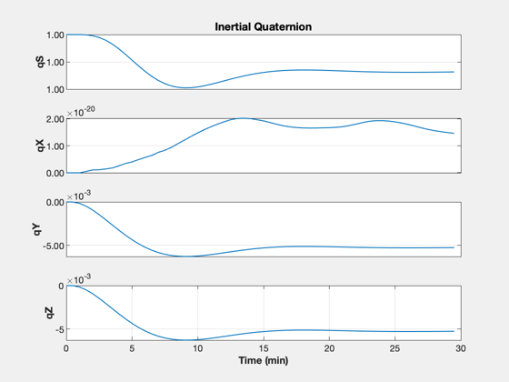
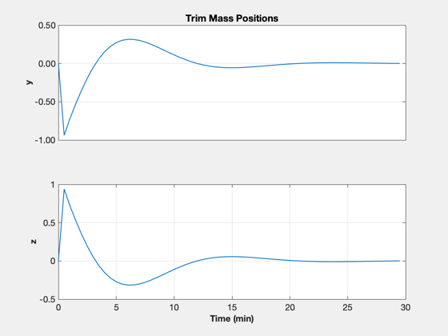
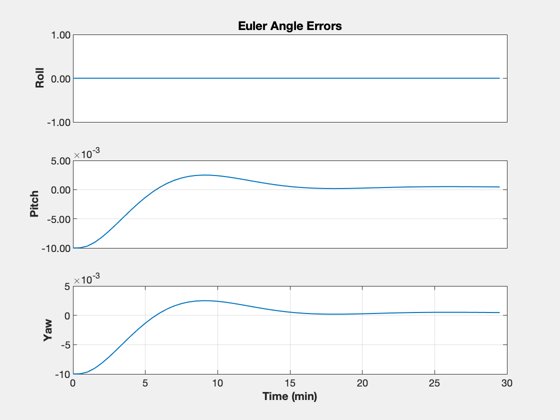
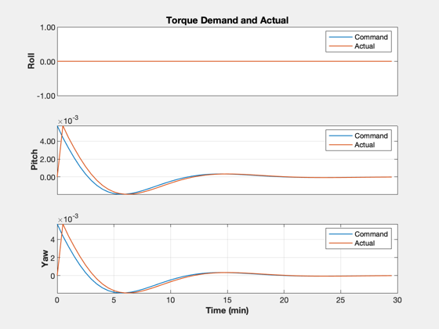
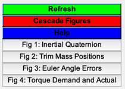

Attitude control of a sail using ballast masses in-plane.
Demonstrates control of a single axis using a simple PID controller. This uses a fixed-rate dynamics model that is suitable for masses that are controlled by stepper motors.
Demonstrates: PlateWithMasses PIDMIMO FMovingBody and FCoreAndMoving TorqueToCM CMToMassPositions
------------------------------------------------------------------------ See also AC, PIDMIMO, QTForm, QZero, Plot2D, Cross, RK4, CMToMassPositions, TorqueToCM, FCoreAndMoving, FMovingBody ------------------------------------------------------------------------
Contents
%-------------------------------------------------------------------------- % Copyright (c) 2006, 2022 Princeton Satellite Systems, Inc. % All rights reserved. %-------------------------------------------------------------------------- % Since version 7. % 2022.1 Replaced Plot2D with TimeHistory. %-------------------------------------------------------------------------- % Constants c = 3e8; pSun = 1367; wSail = 100; % User Parameters pitchStep = 0.01; % y-axis, radians yawStep = 0.01; % z-axis, radians clear SailDisturbance
Create suitable CAD model
g = load('PlateWithMasses');
Design controller
Control parameters - use PIDMIMO to design control loops
xN = zeros(6,1); % Controller state iner = diag([1 1 1]); % Unit inertia zeta = 2; % Damping ratio wn = 0.001; % Control frequency tauInt = 5000; % Integrator time constant omegaR = 5*wn; % Rate filter frequency sType = 'z'; % Type of equations dT = 30; % sec % Resulting control values will be accelerations (due to unit inertia input). [aC, bC, cC, dC] = PIDMIMO( iner, zeta*ones(1,3), wn*ones(1,3), tauInt*ones(1,3), ... omegaR*ones(1,3), dT, sType ); uControl = [0 1 0; 0 0 1]'; dOffset = zeros(3,3); mControl = [g.body(1).mass.mass g.body(2).mass.mass g.body(3).mass.mass];
Set up an attitude maneuver to simulate
% States for each body, including attitude, are stacked xCore = [zeros(6,1);QZero;zeros(3,1)]; xMass = [zeros(6,1);QZero;zeros(3,1)]; x = [xCore; xMass; xMass]; % Indices iR1 = 2+13; % y mass position iR2 = 3+26; % z mass position iV1 = 5+13; % y mass velocity iV2 = 6+26; % z mass velocity % New attitude command angCommand = [0;pitchStep;yawStep]; % Assume a constant sail force in the ECI frame f = struct; f.total = [-2*pSun/c*wSail^2;0;0]; tq = struct; tq.total = [0;0;0]; % Assume center of pressure is at origin Cp = [0;0;0]; % Additional fields for RHS d.g = g; d.nBody = 3; maxRate = 1; % m/s
Simulate maneuver
% Number of simulation points nSim = 60; % Preallocate plotting arrays xPlot = zeros(size(x,1),nSim); tPlot = zeros(1,nSim); aEPlot = zeros(3,nSim); TcPlot = zeros(3,nSim); TaPlot = zeros(3,nSim); % Simulation loop for k = 1:nSim % Transverse angle error (small angles) u = QTForm( x(7:10), [1;0;0] ); angleError = [0;-u(3)-angCommand(2);u(2)-angCommand(3)]; % Control yN = cC*xN + dC*angleError; xN = aC*xN + bC*angleError; Tcommand = -g.mass.inertia*yN; % Actuation cM = TorqueToCM( Tcommand, f.total, Cp ); rhoCommand = CMToMassPositions( cM, mControl, dOffset, uControl ); rhoActual = [x(iR1); x(iR2)]; deltaRho = rhoCommand - rhoActual; rhoDot = sign(deltaRho).*min( abs(deltaRho)/dT, maxRate*[1;1] ); % Update rates xRates = x; xRates(iV1) = rhoDot(1); xRates(iV2) = rhoDot(2); xNew = FMovingBody( 'init', x, xRates, tq, struct('g', g) ); % Disturbances - simple torque model g.body(2).rHinge = [0;rhoActual(1);0]; g.body(3).rHinge = [0;0;rhoActual(2)]; cMActual = (mControl(2)*g.body(2).rHinge + mControl(3)*g.body(3).rHinge)/g.mass.mass; tq.total = Cross( Cp - cMActual, f.total ); d.force = f; d.torque = tq; % Store xPlot(:,k) = x; tPlot(:,k) = (k-1)*dT; aEPlot(:,k) = angleError; TcPlot(:,k) = Tcommand; TaPlot(:,k) = tq.total; % Integrate x = RK4( @FCoreAndMoving, xNew, dT, 0, '', d ); end
Plot
rPY = {'Roll','Pitch','Yaw'};
TimeHistory( tPlot, xPlot(7:10,:), {'qS','qX','qY','qZ'},'Inertial Quaternion' );
TimeHistory( tPlot, xPlot([iR1 iR2],:), {'y','z'},'Trim Mass Positions' );
TimeHistory( tPlot, aEPlot, rPY,'Euler Angle Errors' );
l = {'Command' 'Actual'};
TimeHistory( tPlot, [TcPlot;TaPlot], rPY,...
'Torque Demand and Actual',{[1 4],[2 5],[3 6]},{l l l});
Figui
    